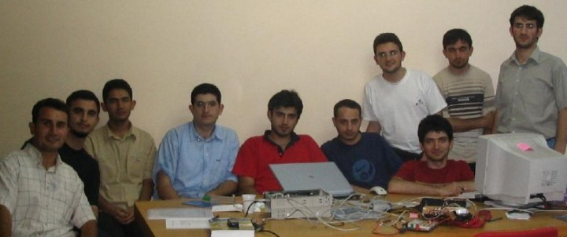
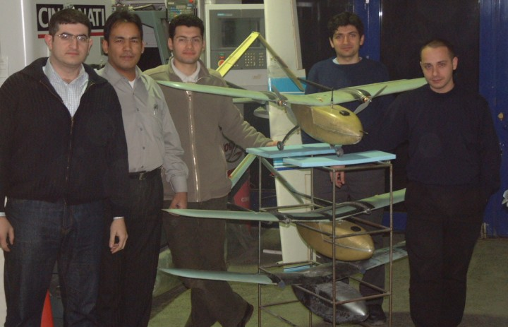
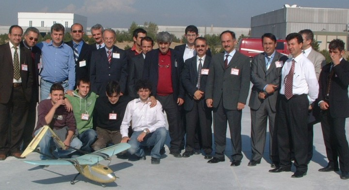
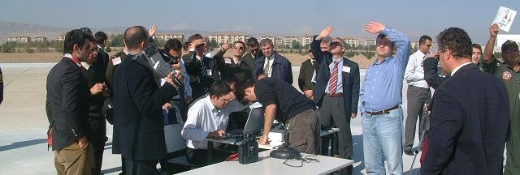
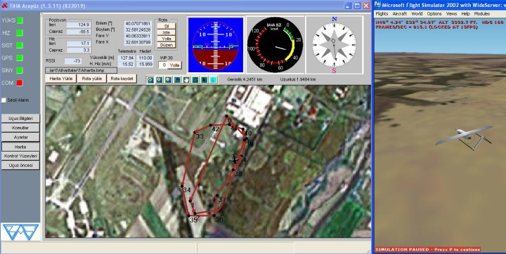
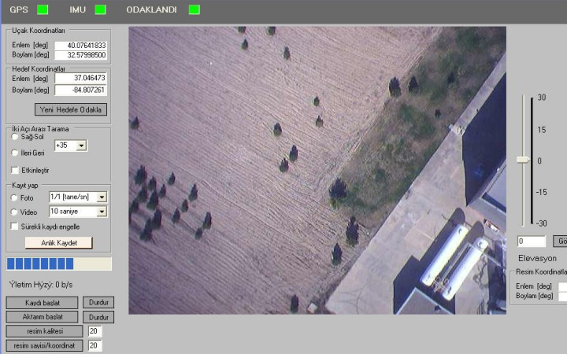

|
Proje Ekibini tanýtýr mýsýnýz? Nasýl oluþtu ekibiniz?
Konusu gereði farklý disiplinlerde eðitim gören insanlardan oluþuyor ekibimiz. Elektronik, Bilgisayar, Kontrol, Makina, Uçak, Endüstri mühendisliði gibi farklý eðitim alt yapýlarýna sahip arkadaþlarýmýz var. Ekibimizin neredeyse tamamý ÝTÜ mezunu, proje öncesinde ÝTÜ Uçak ve Uzay, Elektronik fakültesi ile iliþkilerimiz vardýr. Bu bölümlerden bu konuyla ilgili olarak ekip oluþturma faaliyetleri baþlayýnca konuyla ilgili, idealist arkadaþlarla bir araya geldik ve çalýþmalara baþladýk.


Sistem tasarýmý ve çok disiplinli bu projeni yönetimini nasýl yaptýnýz?
Çok farklý branþlardan insanlardan oluþan bir ekip olduðuz için koordinasyonun çok iyi olmasý gerekiyordu. Projenin yönetilmesi açýsýndan da iþ konularýnýn tamamý hakkýnda bilgi sahibi olan bir ekip liderine ihtiyaç vardý. Tüm iþler birbirine baðlý olarak yürüdüðü için en ufak bir aksaklýk tüm iþi engelleyebiliyordu. Dinamik bir yapýda olmamýz, herkesin amaca kitlenmiþ olmasý bizim bu tip zorluklarý aþmamýzý saðladý. Aramýzdaki samimiyet, herkesin her bilgiyi birbiri ile paylaþmasý, ortak karar alýp hareket edebilme ve de uçuþ öncesi eksik kalan konularda herkesin o konuya odaklanmasý bu engelleri aþmamýzý saðladý.
Ne zorluklarla karþýlaþtýnýz ve nasýl çözdünüz?
Teknik açýdan karþýlaþtýðýmýz çok aksaklýk oldu. Birkaç örnek vermek gerekirse, örneðin ilk uçuþ testlerini yaparken otopilot yazýlýmýnda binlerce satýr arasýndan bir satýr içindeki min/max hatasý yüzünden uçak hep tam gaz uçmaya çalýþýyordu. Sadece 1 satýrdaki hatayý tespit edip düzeltmemiz bile 1 gece sürmüþtü. Bunun gibi birçok teknik problemle karþýlaþtýk. Çözümlerinde ise yine koordinasyonlu olarak ekip halinde hareket etmenin çok faydasýný gördük...
Teknik zorluklarýn ötesinde aslýnda ülkemizde bu tür çalýþmalarýn yaygýnlaþmasý konusunda mevcut temel zorluklarla bizde karþýlaþtýk. En büyük mesele milli teknoloji ve bilim geliþtirme konusunda ortak bir bilincin oluþmasý..
Bu konuda akademik kurumlarla iþbirliðiniz, ortak çalýþmalarýnýz var mý? Akademik ortamlarda çalýþmalarýnýzý tanýtýyor musunuz?
Proje baþlangýcýndan beri ÝTÜ Uçak ve Uzay fakültesi, Kontrol Mühendisliði bölümü ile koordinasyon halindeyiz. Bugüne kadar bu bölümlerden olan öðrencilerle 4 bitirme tezi tamamlandý, ders ödevlerine konu oldu bizim çalýþmalar. Bu bölümlerden gelen öðrenciler yaz stajlarý ile bize destek verdiler. Çeþitli zamanlarda havacýlýk, savunma konularý ile ilgili konferanslarda makale sunumlarý yapýyoruz. Örneðin geçtiðimiz sene içerisinde Hava Harp Okulu'nda düzenlenen Havacýlýkta Ýleri Teknolojiler Sempozyumu'nda 3 makale sunduk, yine 2005 yýlý içerisinde ÝTÜ'de düzenlenen Otomatik Kontrol Sempozyumunda 3 makale sunarak çalýþmalarýmýzý tanýtma imkaný bulduk.

Baþka ne tip projeler üzerinde çalýþýyorsunuz?
Ýnsansýz hava aracý projesi altýnda yürüttüðümüz baþka projelerde var. Örneðin otonom kamera projesi, bu projenin amacý hava araçlarýna yönelik otomatik hedef tespit ve takibi yapabilecek kamera sistemi geliþtirmek, ve geçen sene ÝTÜ'de Projekent yarýþmasýnda 2.lik ödülü aldý. Diðer projemiz ataletsel ölçüm ünitesi geliþtirilmesi, bu proje kapsamýnda sensörlerin entegre edilerek gerekli yazýlýmlarýnda geliþtirilmesi ile tümleþik ataletsel ölçüm ünitesi geliþtirmeyi hedefliyoruz. Bir diðer proje INS/GPS entegrasyonu projesi. Uçak, helikopter, denizaltý, füze gibi sistemlerde kullanýlan GPS sisteminden daha hassas konumlama ve durum bilgilerine ulaþmayý saðlayan INS/GPS sistemi konusunda da çalýþmalarýmýz devam etmektedir.
Bayraktar Mini Ýnsansýz Hava Aracý Sistemini tanýtýr mýsýnýz?
Bayraktar Mini ÝHA görev olarak elden atýlabilen, gövde üzerine iniþ yapabilen, tam otonom uçuþ kabiliyetine sahip, 15 km uzaklýktan telemetre ve görüntü aktarýmý yapabilen, 1 saat uçuþ yapabilen, çantada taþýnabilir bir mini uçak. Biz en son geliþtirdiðimiz sistemleri bu uçak için özelleþtirdik. Mini olmasýndan dolayý elektronik ve faydalý yüklerin hafif ve boyut olarak ufak olmasý gerekiyordu. Mikrodenetleyici tabanlý olarak geliþtirdiðimiz donaným yapýsý üzerinde bulunan gerçek zamanlý iþletim sistemi ve bu iþletim sistemi üzerinde çalýþan gömülü yazýlým jiroskop, ivmeölçer, GPS, magnetometre vb. sensörlerden aldýðý veriler doðrultusundan uçaðýn otonom olarak uçuþunu saðlamaktadýr. Bu uçaða özel olarak geliþtirdiðimiz sistem tek bir iþlemci üzerinden uçaðý kendi kendine uçurmasýnýn yaný sýra, kameradan çekilen görüntülerin yere gönderilmesi, uçuþ bilgilerinin yere gönderilmesi, yerden alýnan görev komutlarýnýn (yeni uçuþ rotasý, ayarlar vb.) iþlenmesi vb. iþlemlerde yürütmektedir. Dünya üzerinde benzer ÝHA sistemlerinde kullanýlan otopilot sistemleri arasýnda tüm bu özellikleri bir iþlemci üzerinden gerçekleþtirebilen baþka bir otopilot sistemine ben rastlamadým.
Yer sistemlerinde de yine güvenilir olmasý açýsýndan gerçek zamanlý çalýþan mikrodenetleyici tabanlý yer kontrol bilgisayarý ve buna baðlý olarak kullanýcý arayüzün çalýþtýðý bir laptop PC, manüel kumanda bulunmaktadýr. Uçak hava uçarken kullanýcý arayüz üzerinden takip edilebilip, çeþitli uçuþ bilgilerini (Yükseklik, Hýz, Enlem, Boylam vb.) ve donaným durum bilgilerini gerçek zamanlý olarak takip edebiliyoruz. Yine dijital harita üzerinden yeni uçuþ rotalarý çizip uçaða uçuþ esnasýnda yükleyebiliyoruz. Ayrýca geliþtirdiðimiz arayüz yazýlýmý ile bu bilgileri Microsoft Flight Simulator programý ile entegre ederek, uçuþu 3 boyutlu olarak da izleyebiliyoruz. Bunun yaný sýra geliþtirdiðimiz dijital görüntü arayüzü ile uçaktan gönderilen resimleri koordinatlarý ile birlikte izleyip, uçak üzerinde bulunan tek eksende hareket etme kabiliyetine sahip kamerayý bu arayüzden kontrol edebiliyoruz.
Bayraktar Mini ÝHA'yý Türkiye'de kimlere sundunuz, ilgi var mý?
Bu aracý 24 Ekim 2004 tarihinde TAI tesislerinde askeri ve savunma sanayi yetkilileri önünde sunduk. Genel Kurmay, Kara Kuvvetleri, Hava Kuvvetleri, Deniz Kuvvetleri, SSM ve TAI yetkililerin huzurunda son derece baþarýlý geçen 3 uçuþ gerçekleþtirdik. Toplam olarak 1 saat boyunca otonom uçuþ yapýldý. Ýstenilen tüm demo kriterlerini yerine getirdi. Yoðun bir ilgi vardý.



|